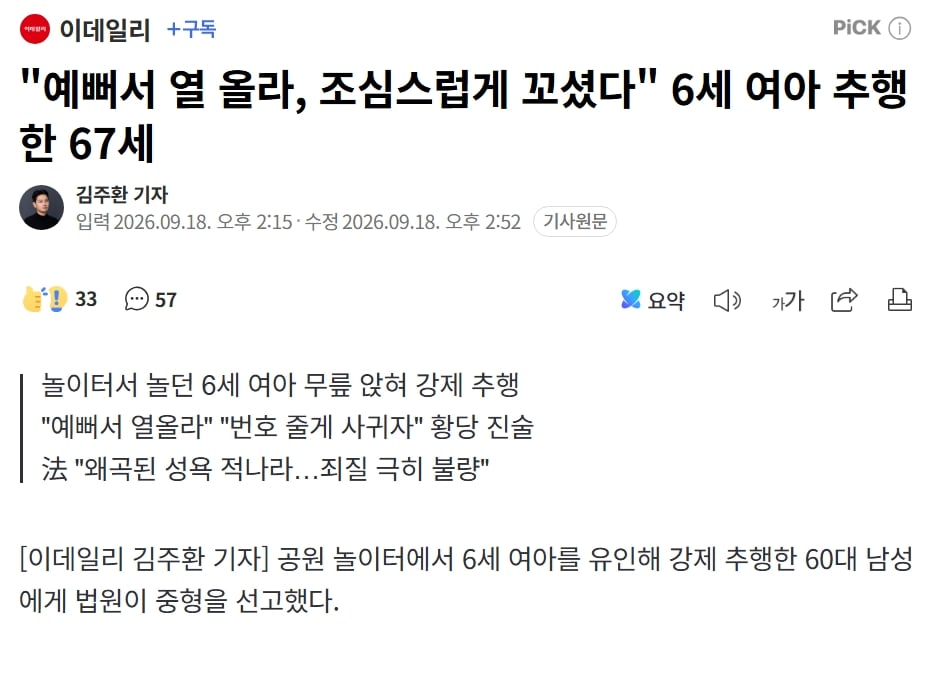
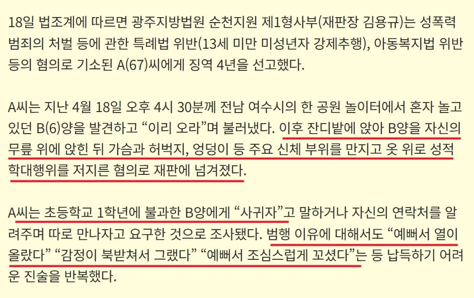

18일 법조계에 따르면 광주지방법원 순천지원 제1형사부(재판장 김용규)는 성폭력범죄의 처벌 등에 관한
특례법 위반(13세 미만 미성년자 강제추행), 아동복지법 위반 등의 혐의로 기소된 A(67)씨에게 징역 4년을 선고했다.


18일 법조계에 따르면 광주지방법원 순천지원 제1형사부(재판장 김용규)는 성폭력범죄의 처벌 등에 관한
특례법 위반(13세 미만 미성년자 강제추행), 아동복지법 위반 등의 혐의로 기소된 A(67)씨에게 징역 4년을 선고했다.
씨발 저러고도 4년 ㅋㅋㅋㅋㅋㅋㅋㅋㅋㅋㅋㅋ
감빵가서도 존나 ㅋㅋㅋㅋ
뒤져야지 그냥
아오 산소 아깝다